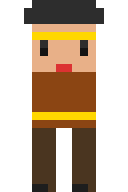
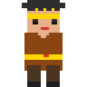

烁烁做了两个版本，请铲屎官选方向：

✅ 跟现有游戏 100% 风格一致
✅ 无需改代码（碰撞框、尺寸都不用动）
✅ 极简像素剪影，经典街机感
⚠️ 细节空间有限（脸、武器难表现）

✅ 参考 itch.io 预览图风格
✅ 更多细节空间（金冠尖角、V领、腰带）
✅ 角色更醒目，动作更有表现力
⚠️ 需要改代码（碰撞框、速度、相机 zoom）
选 A = 快速迭代，不改代码，先让游戏跑起来
选 B = 品质升级，需要金哥/宪宪帮忙改一圈代码适配
也可以先 A 后 B：用 A 把游戏跑通验证玩法，确定要继续做了再升级到 B。Placeholder → Polish 的路线。